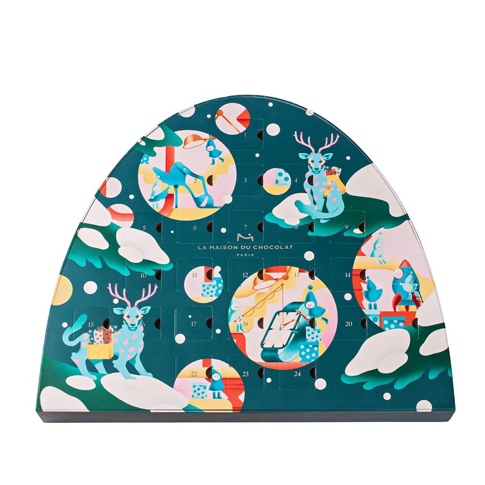
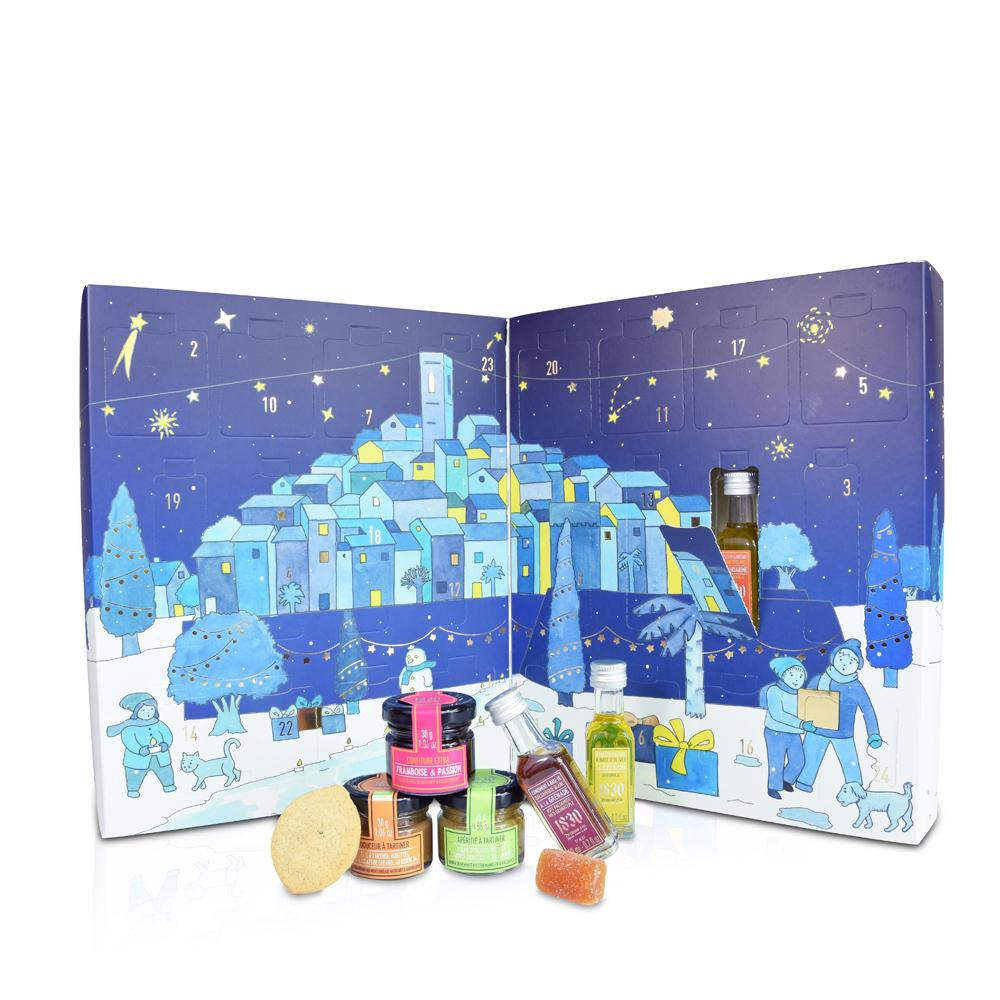
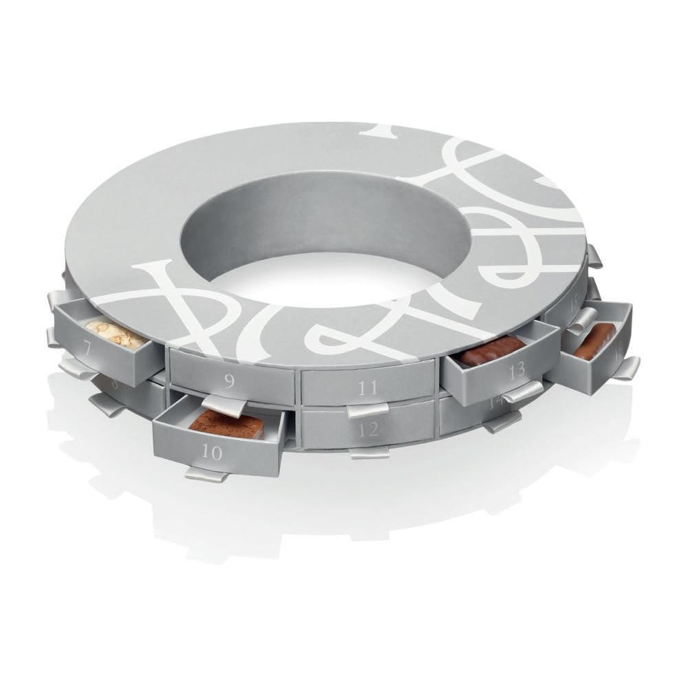
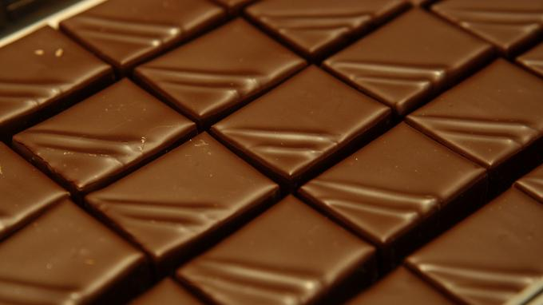
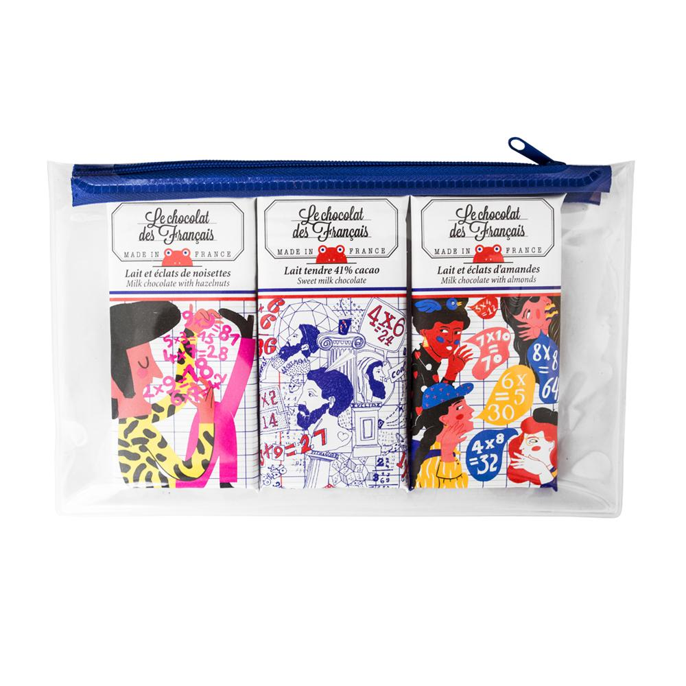
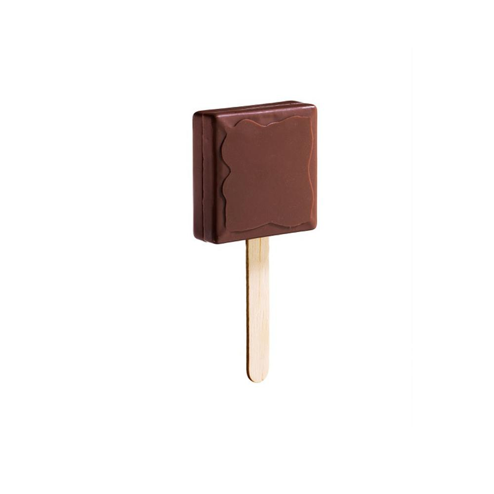
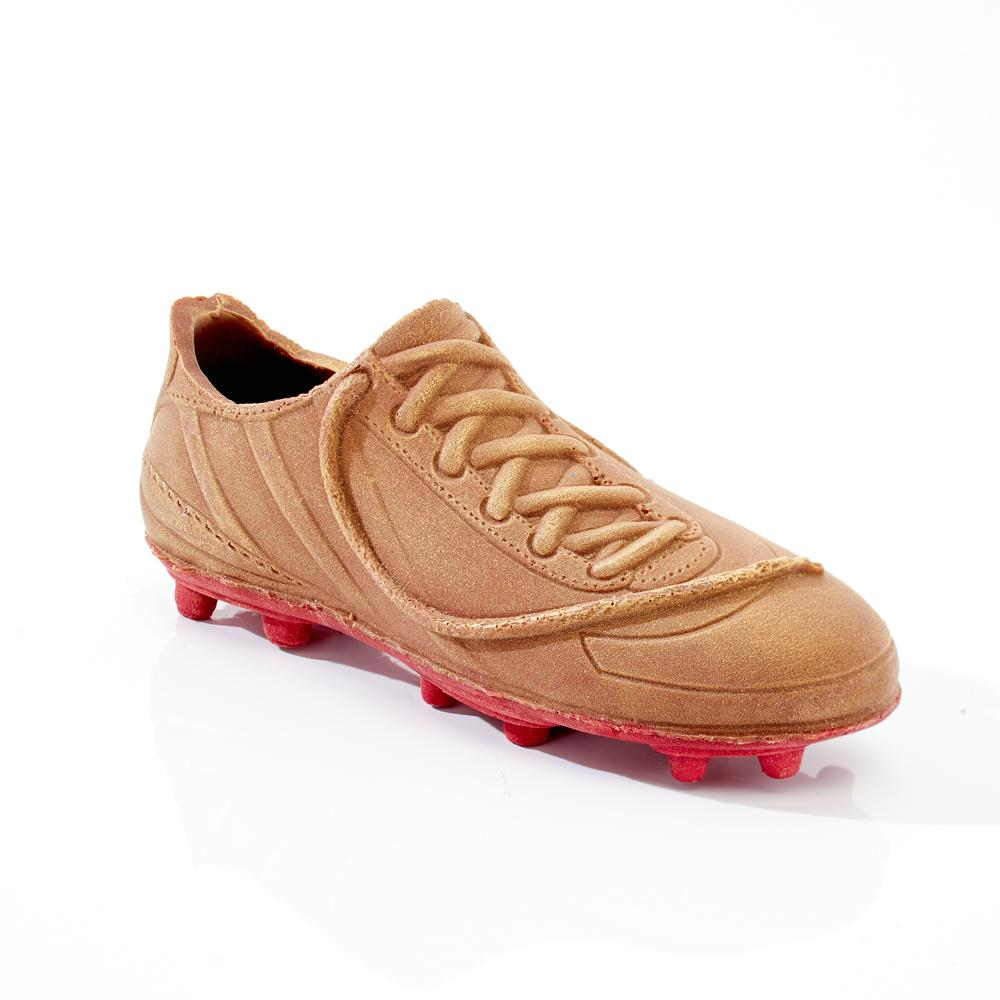
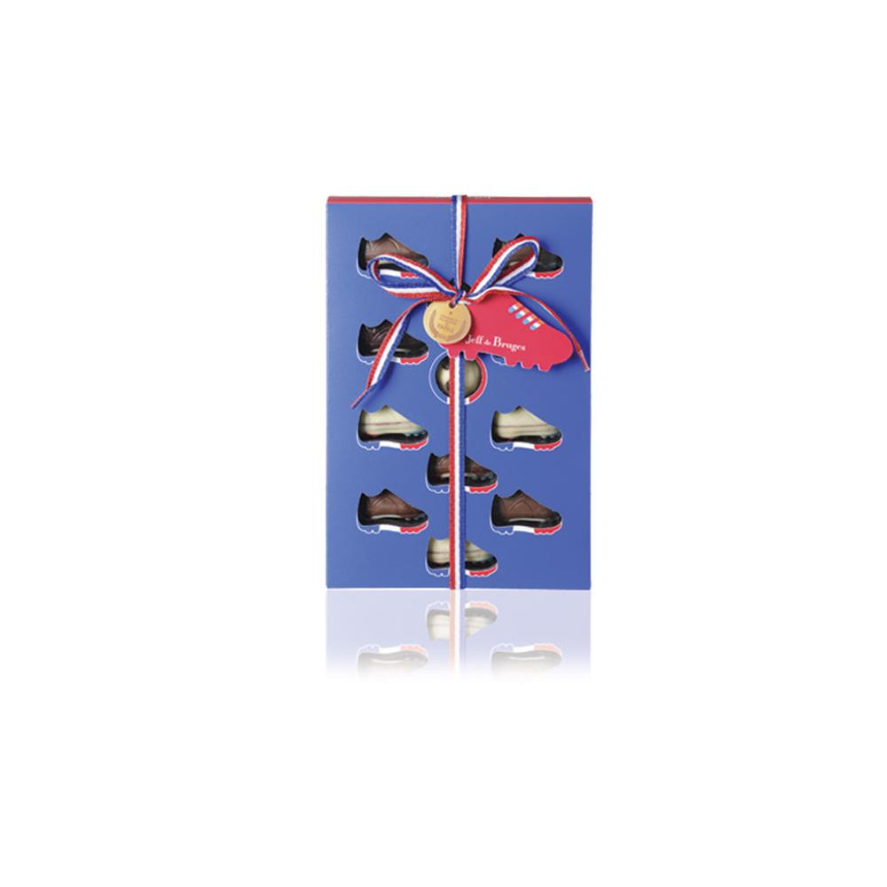

Chocolates, teas, beers or coffee capsules make us wait until December 24, Christmas Eve. The Pastry of Dreams, Pierre Marcolini, Alan Ducasse ... Selection of the best calendars of Advent 2018.
We expect them every year almost as much as Christmas Day. The calendars of Advent, sources of joy and gourmet discovery, finally arrive for our greatest happiness. This German tradition dates from the nineteenth century and allowed the time to deceive the impatience of children with pious images. Today, this popular custom has become a gourmet countdown until December 24th. And if the calendars of Christophe Michalak and La Pâtisserie des Rêves remain popular with children, parents are now also their account. Pierre Marcolini, Alain Ducasse, Pierre Hermé or Hugo & Victor ... to each great chocolate maker his selection of surprises. And with each profile, its calendar. Dammann Frères or More than Tea are for lovers of infusions ... and teas, Saveur Beer for bubble lovers and MyMuesli for breakfast enthusiasts. We are waiting for December 1st with haste!
In images
Advent Calendar The Pastry of Dreams
To make us wait patiently until December 24, The Pastry of Dreams has imagined an Advent calendar that can not be more greedy. On the program: in a Parisian setting confectionery, chocolates and biscuits are mixed. That should delight young and old.

Advent Calendar The House of Chocolate
24 days of chocolate attention waiting for Christmas is what promises the Advent calendar of La Maison du Chocolat. A timeless classic that we do not expect to happen this year.

Advent Calendar Maison Brémond 1830
Confectionery, spreads, biscuits, flavored olive oils, white, black & fruity balsamic vinegar or savory spreads, Maison Brémond signs an original Advent calendar that should suit the wishes and tastes of the whole family. His little plus? His price.

Advent calendar Pierre Hermé
This year, it will be powder gray and white for Pierre Hermé. The pastry chef revisits the traditional Christmas wreath in a sweet version. A gourmet treasure to offer and to offer.
Advent Calendar More than Tea
Good mood, Sunrise, Ceylon, Earl Gray ... 25 teas or infusions selected with care to discover while waiting for Christmas, it is the good idea of More than Tea with this garland packed in a box (like a tin can but in much prettier) to open from December 1st.
Men have been eating chocolate for over 5000 years
The Amazonian Indians were already consuming chocolate, in liquid form, 5300 years ago, reveals the analysis of ceramics discovered in Ecuador.
When the temperatures start to fall, what's more pleasant than taking refuge with a good fire to enjoy a good hot chocolate? Europeans discovered this pleasure in the sixteenth century only, when the first cocoa beans were brought back to Spain after the first Atlantic crossings. The drink, initially bitter, will be gradually softened with the addition of milk and sugar. But long before helping us overcome the harshness of winter, chocolate in its liquid form was already consumed by people populating the Amazon rainforest 5,300 years ago, in a climate much more lenient. This is the conclusion of work conducted by an international team (Nature Ecology & Evolution) who have just highlighted archaeological evidence showing the consumption of cocoa in South America 1400 years earlier than we had thought until then. br>
Until now, the oldest traces of chocolate were found in Central America on pottery of 3900 years old. Far from the Amazon. "It had already been identified that cocoa originated in South America and not Central America in previous studies," says Claire Lanaud, geneticist of the Center for International Cooperation in Agronomic Research for Development (CIRAD), co-author of the 'study. "But we did not have archaeological evidence of human use. Discovering such ancient traces is a real surprise. "
Archaeological Site of Santa Ana La Florida
A product of everyday life
5300 years ago, cocoa consumption was very different from ours. On the one hand, chocolate only existed in its liquid form and, on the other hand, it had to be drunk cold and without milk. Unfortunately, the analyzes do not reveal the ancient recipe. "We know, however, that people were not content to consume the pulp that surrounds the grain," says Claire Lanaud. "The drinks were made from crushed beans, a highly energetic beverage. And contrary to what one might think, the beans were not very bitter at the time, in this region. The drink was probably pretty sweet. "Once the seeds were crushed, they released nutritious fats, carbohydrates and active ingredients like caffeine. "We found traces of cocoa on more than 30% of the 220 samples of ceramics analyzed. A significant amount that reflects common use, "explains Claire Lanaud. "Both on funeral sites, suggesting that cocoa could be offered as an offering. But also on sites of everyday life. Which shows that cocoa was an everyday drink. This could not be the result of anecdotal picking in the forest! The plants were domesticated. "Objects in the form of cocoa pods have been brought to light, showing the importance of the commodity in society. Seashells, such as spondylus and strombus, from the Pacific coast, were also found in the tombs of the Santa Ana Florida site. Communications existed between the peoples of the Pacific coast and those of Amazonia. "We would like to discover what role cocoa could play in these exchanges," says Claire Lanaud. Assuming he had one, of course.
Ceremonial site of Santa-Ana La Florida
The 2018 French Chocolatiers Awards
EXCLUSIVE - A preview of the Salon du Chocolat, which will open its doors on October 31, Le Figaro publishes the names of the ten chocolatiers awarded by the Club des croqueurs de chocolat in its 2019 edition.
At the Chocolate Salon.
AWARD OF TALENT
BERTRAND CHOCOLATIER (Bertrand Tessal)
44 rue Charles-de-Gaulle, 42300 Roanne
AWARD OF LUDO DIDNT DO THIS
LE CHOCOLAT D'EMMANUEL BRIET (Emmanuel Briet)
13, rue Porte-Lucas, 51200 Épernay
AWARD OF ITS 3AM
CHOCOLATERIE AGNÈS ET PIERRE (Agnès et Pierre Previdente)
56, place de la Cité, 12000 Rodez
AWARD FOR ME PLS
CHOCOLATERIE JOSEPH (Frédéric Joseph)
13, rue des Chaînes, 24000 Périgueux
AWARD DE LA CHOCOLATIÈRE
CHOCOLATERIE SIGNOURET (Anne-Lise Signouret)
79, avenue Jean-Jaurès, 05000 Gap.
AWARD DE LA QUALITÉ CHOCOLATIÈRE
DAMIEN VÉTAULT CHOCOLATS (Damien Vétault)
1, place du Lycée, 49100 Angers
AWARD DU CHOCOLAT GOURMAND
DADOU MACARONS & CHOCOLATS(Serdar Sayim)
9, place de l'Église 78110 Le Vésinet
AWARD DE L'EXCELLENCE
GUERLAIS CHOCOLATIER (Vincent Guerlais)
11, rue Franklin, 44000 Nantes
AWARD DE LA TRADITION FAMILALE
SAUNION (Thierry Lalet)
56, cours Georges-Clemenceau, 33000 Bordeaux
AWARD DE L'ORIGINALITÉ
SÉBASTIEN BROCARD (Sébastien Brocard)
9 bis, rue de Lyon,01630 Saint-Genis-Pouilly.
Christmas chocolate making has already started

More than 34,000 tons of chocolate are sold at Christmas in France.
The end of year celebrations are a delight for chocolate makers. The season is highly strategic and is getting ready for some at the beginning of August.
It's winter in summer. Industrial chocolatiers started their Christmas production at the beginning of August. The stakes are high: more than 34,000 tons are sold at Christmas in France, or nearly 9% of sales made only over the holiday season, according to the statistics of the trade union of chocolate. In the factories of the Cemoi group, the pace has increased so that the first deliveries are ready by the end of September and seasonal workers have come in as reinforcements. "Our workforce is growing by 100 to 150% in anticipation of this particularly strategic season," says Patrick Poirrier, CEO of the French number one chocolate. For the company with a turnover of 820 million euros, Christmas represents 44% of the volume of its sales. Melting, molding, packaging, the machines will run at full speed until late October and then prepare in December the other highlight of chocolate confectioners: Easter.
A season with ever wider contours
"Between consumer surveys, the conceptualization of new trends and customer presentations, a season is preparing two years upstream," says Patrick Poirrier. The goods are then stored in warehouses with temperature control before being delivered in large and medium-sized areas. "This anticipation of the industrialists is at the antipodes of the artisanal production, explains a interlocutor specialized in the transformation of raw material. They must handle a high quality of work in a minimum of time. "Especially chocolate exporters face a season with increasingly large contours. On the other side of the Atlantic, hostilities starting at the end of November with Thanksgiving. The production of artisanal chocolates is done with a tense flow in a few weeks, or even a few days before the start of the holidays. "We work with fragile products that are kept very little, we are told at Maison Fouquet, Parisian chocolatier who cultivates a know-how dating from the nineteenth century. Our chocolates are made the day before to be sold the next day or two days later in the shop. "However, some homes are starting now to anticipate their hiring. The sector is struggling to recruit, particularly because of its high seasonal labor requirements. Chocolatiers, logistics operators, sellers, job offers for these trades abound on the Internet. "We recruit and train staff from September. The goal is to build skills to be fully operational at Christmas, "confirms La Maison du Chocolat which plans to increase its workforce by 30% in its workshops as of the return.
Back to 2018: our shopping taste for a gourmet break
Cereal bars, madeleines to blush Proust and other chocolate lollipops ... Selection of snacks that will slip into our school bags in September.
It's back to school. No more afternoons at the beach, swimsuits and sunglasses, now place the brand new notebooks, the return of snack slipped in the binder, the four-hour pleasure in the office or the gourmet break with family . And to accompany us in all these moments of life, the chocolatiers have once again set the bar (of chocolate), very high. On the menu: Alain Ducasse spread and Lenôtre caramel bars. But also, Ladurée macaroons, shell-shaped madeleines Le Comptoir de Mathilde, chocolate squares fashioned by Jean-Paul Hévin, puff pastry buns just out of the oven at La Pâtisserie des Rêves and praline-flavored Michel Cluizel lollipops. You will understand, in 2018, the return is placed under the sign of gluttony. And that's good.
In images
Rentrée 2018: our selection of snack foods - Cyril Lignac
It's back to school. We take the opportunity to enjoy a real snack signed by pastry chef Cyril Lignac: a crunchy biscuit stuffed with salted butter caramel. All wrapped in a thin layer of milk chocolate. Nothing else
Rentrée 2018: our selection of snack foods - Michel Cluizel
While our children have just returned to school, we give them pleasure with these gourmet chocolate lollipops praliné, surrounded by a funny packaging inspired cartoons.
Rentrée 2018: our selection of snack foods - Christophe Michalak
Christophe Michalak appropriates the little biscuit of the cartoon Shrek in a version with milk chocolate and fleur de sel. Here, no gum ball buttons, but a crispy shortbread with hazelnut.

Rentrée 2018: our selection of snack foods - Le Chocolat des Français
Le Chocolat des Français se lance dans la table de multiplication version gourmande. Une façon de s'assurer une bonne note des amateurs de douceurs en cette rentrée. Au programme : 3 tablettes de chocolat, au lait tendre, lait noisette et lait amande, une gomme double face et un crayon à papier. L'école n'aura jamais été aussi alléchante.

Rentrée 2018: our selection of snack foods - Jean-Paul Hévin
In the series chocolate snacks to taste imperatively to better pass this season, this lollipop signed Jean-Paul Hévin. A bi-texture bite, with on one side, a melting praline with almonds, on the other, a smooth cream with hazelnut.
Gourmet and tri-color selection for the World Cup
As Russia debuts the 2018 World Cup, we take stock of these edgy limited editions made to support the French football team.
Until July 15, France will have eyes riveted on Russia, the organizing country of the 2018 World Cup, to follow the various football matches. The opportunity for us to return to these culinary creations, sometimes surprising, marketed for the occasion. On the agenda: chocolates balloons, Léonidas football balloons, milk and white chocolate crampons Jadis et Gourmande, red white blue aperitif terrines by the house of Comtesse du Barry or beer packs in the colors of the selected countries and even World Cup glasses ... Brands have been particularly creative. So, marketing operation or real national support? Missed or real good idea? We leave you to make your own opinion in pictures ... Go France!
In images
12 food creations around the World Cup - Comtesse du Barry
World Cup obliges, Comtesse du Barry launches its limited edition with the colors of the national flag. On the menu: forest duck terrine, chicken liver terrine with Banyuls and terrine from the Pays de Gascogne.
12 food creations around the World Cup - Leonidas
Red white blue chocolate to support the French football team? Why not. Even if the concept is a little far-fetched, we would not miss an opportunity to feast on anything.

12 food creations around the World Cup - Jadis et Gourmande
While the men of Didier Deschamps will score goals with their crampon shoes, chocolate lovers, they will bite them to their teeth. Everyone's passion!

12 food creations around the World Cup - Jeff de Bruges
Finally, Jeff de Bruges celebrates the World Cup with spiked crampons in the colors of the tricolor.